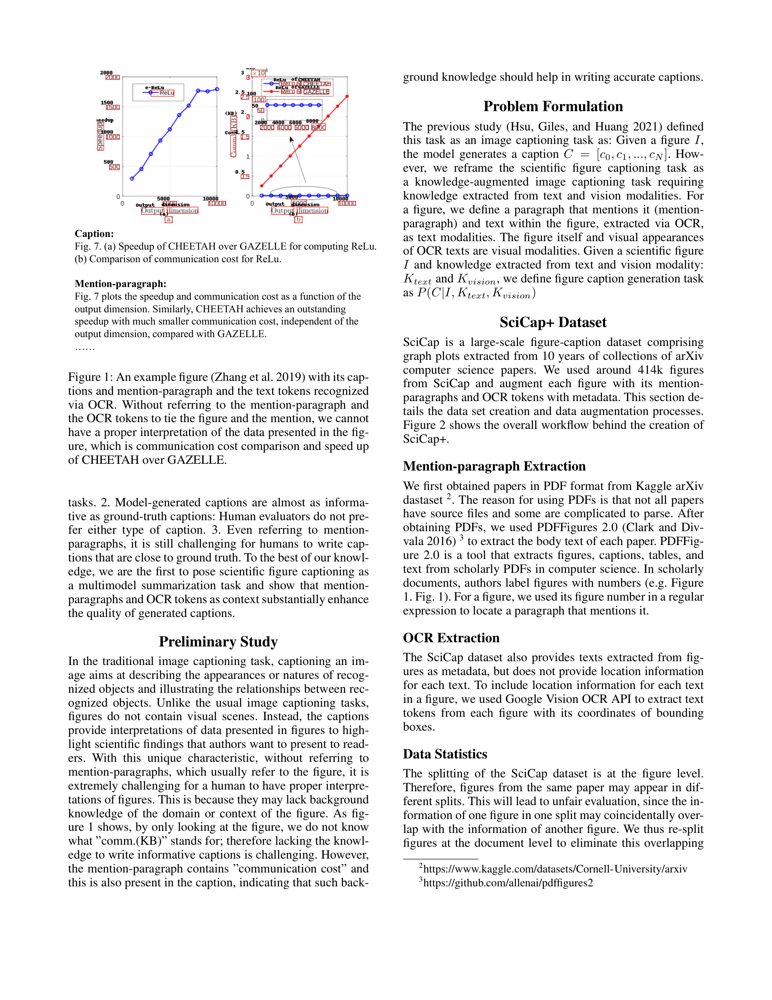

저자: Zhishen Yang, Raj Dabre, Hideki Tanaka, Naoaki Okazaki | 날짜: 2023 | 학회: arXiv (AAAI format) | DOI: 10.48550/ARXIV.2306.03491

Figure 1
SciCap+는 기존 SciCap 데이터셋(414K 과학 figure-caption 쌍)을 mention-paragraph(본문에서 해당 figure를 언급하는 단락)과 OCR 토큰(figure 내 텍스트 및 위치 정보)으로 확장한 knowledge-augmented 데이터셋이다. 과학 figure captioning을 단순 image-to-caption이 아닌 multimodal summarization task으로 재정의하고, M4C-Captioner를 통해 맥락 지식이 캡션 생성 품질을 대폭 향상시킴을 실증하였다.
총평: 과학 figure captioning을 knowledge-augmented task으로 재정의하고 mention-paragraph의 결정적 기여를 실증한 것은 의미 있는 통찰이나, 단일 모델(M4C-Captioner) 실험과 CS graph plot 한정이라는 범위 제약이 아쉽다. "Figure 이미지가 noise"라는 발견은 visual encoder의 한계를 반영할 뿐 figure 시각 정보 자체의 무용성을 의미하지 않으며, 이 점에 대한 심층 분석이 필요하다.